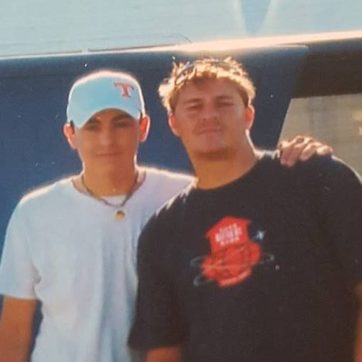

I started playing the guitar quite young. My brother had a black Fender actousic electric guitar that I really loved and he told me that I could have it if I learned to play. And so I did. We have been playing music together ever since, and have built up our own recording studio together.
My brother Cory started playing the guitar before I did and got most of his inspiration from our friend and fellow musician Marcus Eaton. Cory would watch marcus play and, and try to emulate how Marcus would play.